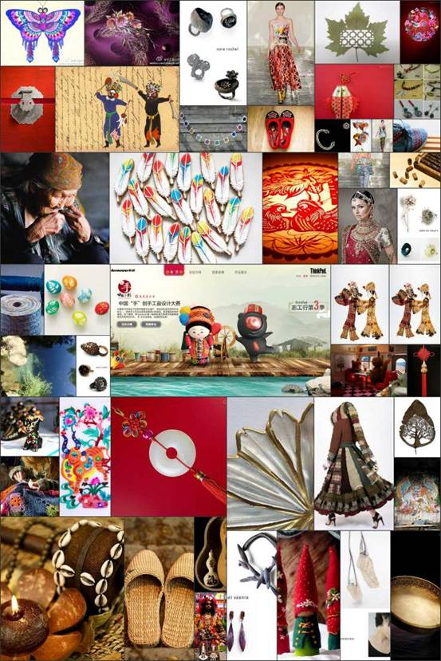
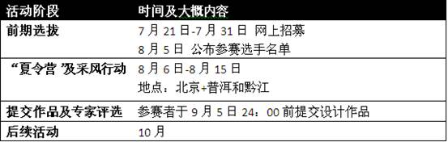

ThinkPad小黑中国“手”创手工益设计大赛志愿者招募开始啦！保护非物质文化遗产，就等你了！
俗话说，读万卷书，还得行万里路呢，与其埋头苦读不如走出去“思行合一”！趁还没毕业，抓紧时间出去走走。今天在人人网ThinkPad小黑公共主页发现ThinkPad小黑志工行第三季已经开始了，今年要去普洱、黔江和阿勒泰，这都是咱们的梦想之地啊！这么好的事情，不敢独享，必须给兄弟姐妹们分享分享，争取咱们校友一起结伴去啊！
具体内容其实ThinkPad小黑的人人网日志（人人网日志链接）说得挺清楚了，我就直接拽过来了，童鞋们入选了别忘了来报个喜啊~
【黑米总动员】ThinkPad小黑中国“手”创手工益设计大赛开始招募喽！http://zgx3.thinkworld.com.cn/
ThinkPad小黑一直秉持“创”的理念，鼓励大学生坚持创新，勇于探索，但热衷创新的小黑绝不仅止于此；有着一颗火红眼睛的小黑，不仅仅迷恋电脑技术，争做同学们的真朋友，更是长期关注、支持公益事业，希望通过自己的力量帮助更多的青年学子走出校园，实践他们的公益梦想。小黑希望同学们在参与活动的过程中，不断成长，在实践中获得更多灵感和思考，以实际行动影响周围的人，传递公益的理念。

前两季的“ThinkPad小黑志工行”，分别是“羌绣保护志工行”活动和“公益创家园”活动，在挥洒辛勤汗水的过程中，不仅为公益事业奉献了自己的爱心，更收获了短暂却永恒的友谊、美好的回忆以及值得珍惜的经历。今年，我们把阵地从四川扩大到了祖国这片辽阔的大地上，因为我们知道，这片被珍爱的土地上，总有许多美等待我们去发现，去探索，去保护。
这个暑假，ThinkPad小黑携手友成基金会和零点青年公益创业发展中心（YES），将带领三十余名志愿者，分为两个小组，分别前往两个地点：普洱和黔江，汲取当地的文艺精髓，发散灵感，挥洒技艺，用绝妙的设计，挽救被忽视的非物质文化遗产――民族手工艺。这就是ThinkPad小黑志工行第三季的主题：中国“手”创手工益设计大赛！
活动时间安排：

▲普洱
▲黔江
报名条件：
报名办法：
被选中的30名志愿者将获得以下权益：
嗯嗯，有权益当然也有义务啦！志愿者们需要：
活动声明：
本活动的最终解释权属于本届大赛组委会
鼓励年轻人关注传统手工艺、理解传统文化，并在亲身实践中启发新的思考，是ThinkPad、友成基金会和零点青年公益创业发展中心举办本次活动的初衷，而为非物质文化遗产的传承和创新提供一个开放式的征集平台，并促进非物质文化遗产融入社会、融入生活，这也是全社会共同的愿景。在未来，ThinkPad小黑会将“创”进行到底，把公益志工行活动持之以恒地做下去，为青年学子们提供更多看世界、为世界创造价值的机会！
活动报名地址：http://zgx3.thinkworld.com.cn/
为保护非物质文化遗产贡献自己的力量，更能饱览祖国的山水之美，体验风土人情，感受民间手工艺的魅力，何乐而不为呢？马上行动吧！